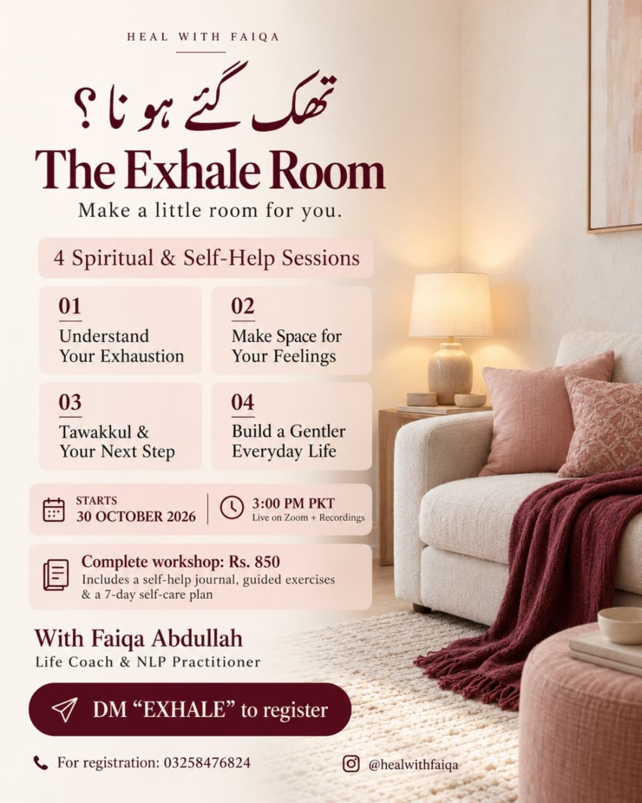

October 2026 cohort
Four spiritual & self-help sessions.
- First session
- Friday, 30 October 2026 · 3:00 PM PKT
- Format
- Live on Zoom, with recordings
- Complete workshop
- Rs. 850 for all four sessions
- Included
- Self-help journal, guided exercises, and a 7-day self-care plan